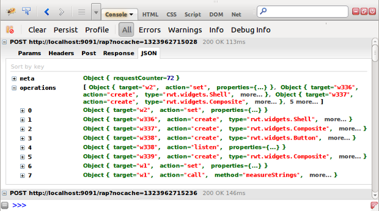

With this milestone, all Ajax responses from a RAP server are now in plain JSON format. No JavaScript is included anymore. This makes the responses much more readable and eases debugging.

With this new protocol, it is now possible to develop alternative clients for RAP. The exact format is described in the RAP Protocol wiki page. Some details may still change until the release.
Since RAP 1.5 will be available together with Eclipse Juno, the target platform is now based on Eclipse 4.2 instead of 3.8. However, the RAP implementation of the Eclipse Workbench remains to be based on 3.x. But there are a couple of important changes in the target platform.
org.mortbay.jetty to org.eclipse.jetty.
Instead of two, Jetty now consists of seven bundles.
org.apache.felix.gogo.*) support it.
Please adapt your launch configurations to these changes as needed.